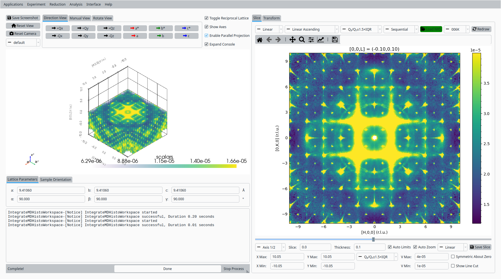
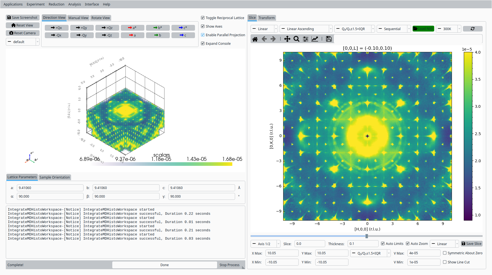
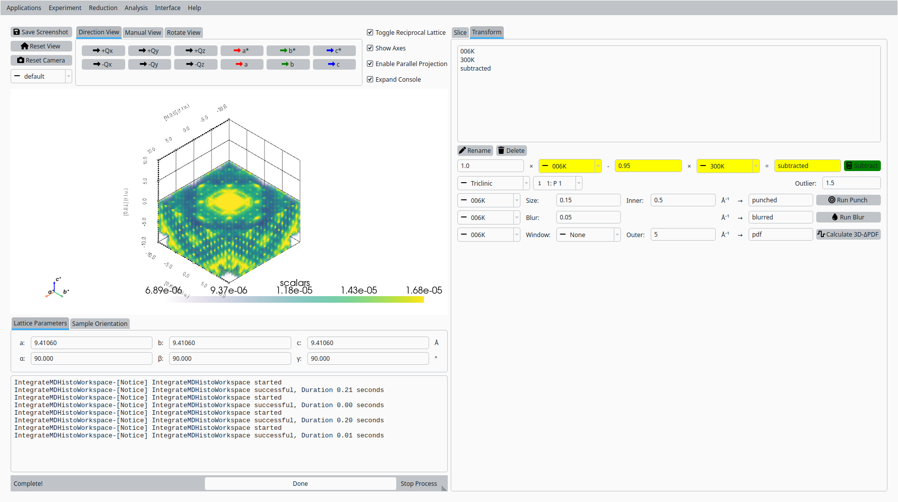
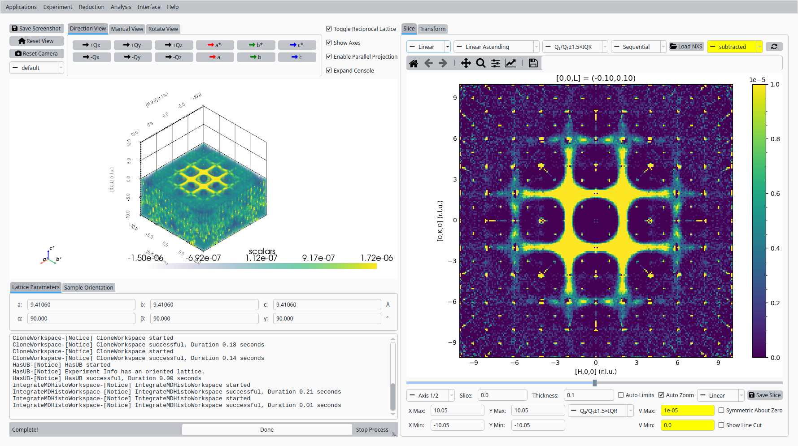
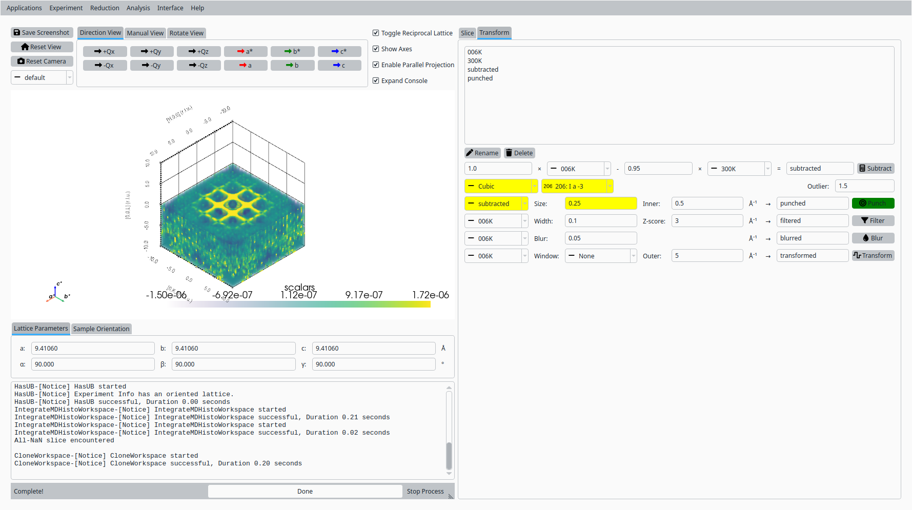
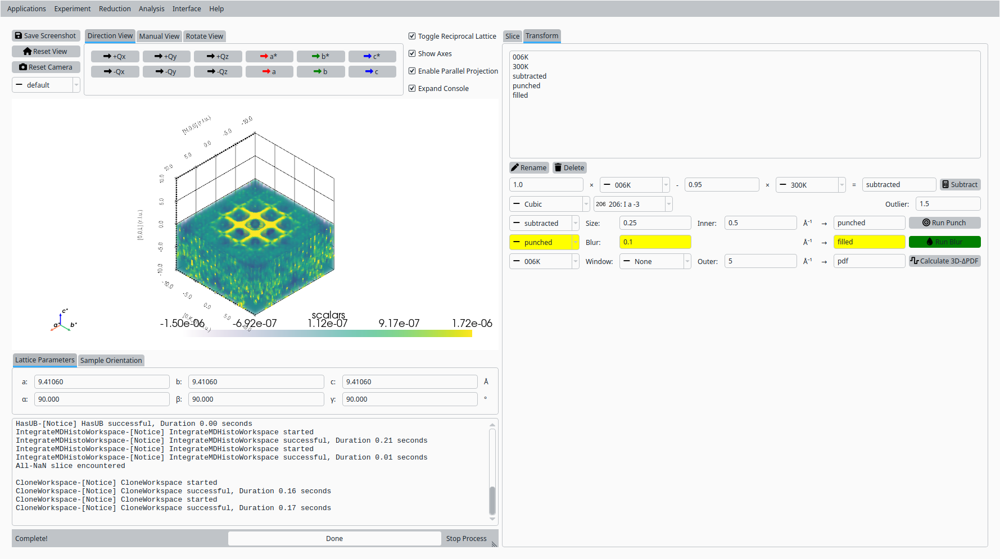
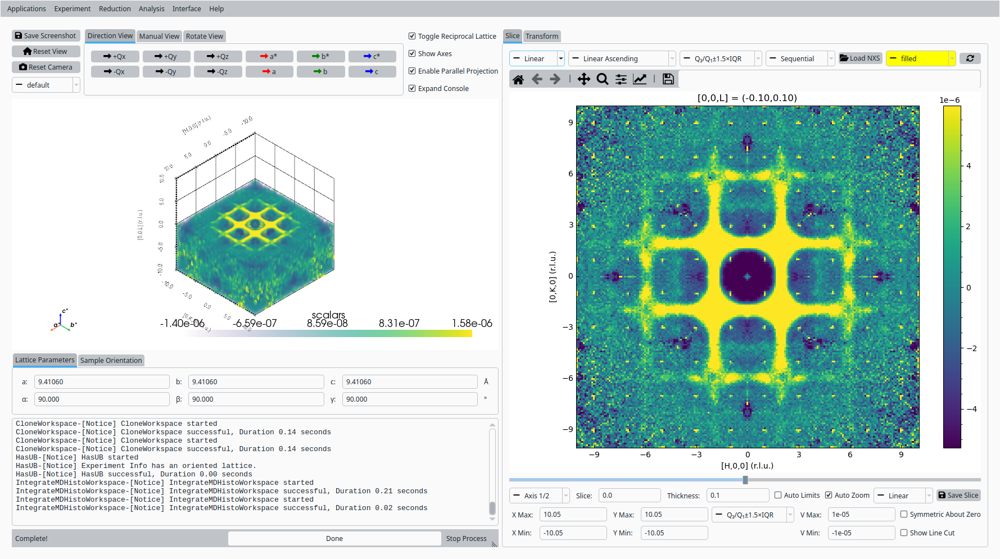
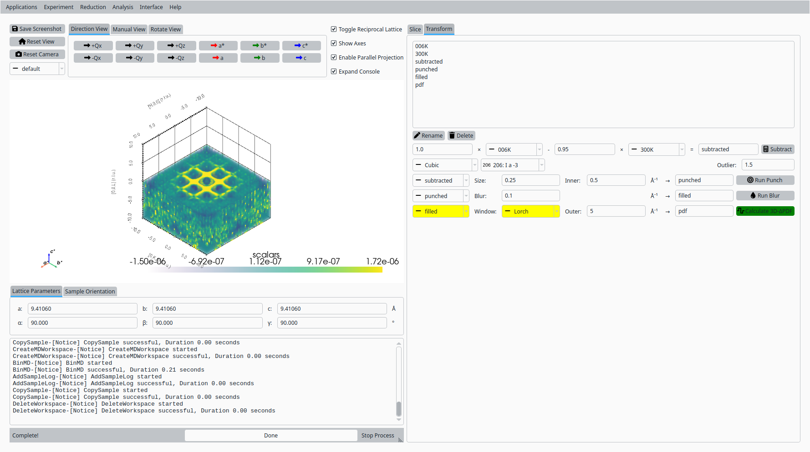
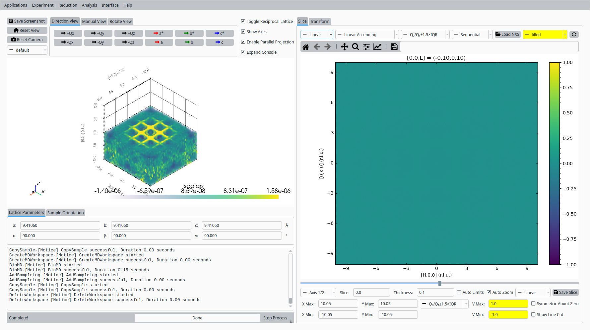

3D-ΔPDF with Bixbyite Data#
This tutorial demonstrates how to use the volume slicer’s Transform tab in NeuXtalViz to calculate a 3D-ΔPDF from normalized CORELLI bixbyite volume data collected at 6 K and 300 K.
Step 1: Load the 6 K Data#
Open NeuXtalViz and navigate to the Volume Slicer tab.
Load the normalized NeXus file for the 6 K dataset, naming it “006K”.
{kind=link}

Load the 6 K bixbyite data.#
Step 2: Load the 300 K Data#
Load the normalized NeXus file for the 300 K dataset, naming it “300K”.
{kind=link}

Load the 300 K bixbyite data.#
Step 3: Subtract the High-Temperature Background#
Switch to the Transform tab.
In the arithmetic panel, select “006K” as workspace A and “300K” as workspace B, scaling B by 0.95.
Name the output “subtracted” and run the subtraction.
{kind=link}

Subtract the scaled 300 K background from the 6 K data.#
Step 4: View the Subtracted Data#
Switch back to the Slice tab.
Select “subtracted” in the workspace combo.
Set the color limits to V Min = 0 and V Max = 1e-5.
{kind=link}

View the subtracted reciprocal-space data.#
Step 5: Punch the Bragg Peaks#
Switch back to the Transform tab.
Select the “Cubic” crystal system and space group 206.
Select “subtracted” as the input workspace, set the punch size to 0.25 (keeping the default inner radius), and run the punch.
{kind=link}

Punch out the Bragg peaks and low-Q region.#
Step 6: View the Punched Data#
Switch back to the Slice tab.
Select “punched” in the workspace combo to see the punched-out regions.
{kind=link}
View the punched reciprocal-space data.#
Step 7: Fill the Punched Regions#
Switch back to the Transform tab.
Select “punched” as the input workspace, name the output “filled”, set the blur size to 0.1, and run the blur.
{kind=link}

Fill the punched regions with a NaN-Gaussian blur.#
Step 8: View the Filled Data#
Switch back to the Slice tab.
Select “filled” in the workspace combo to see the gaps closed in.
{kind=link}

View the filled reciprocal-space data.#
Step 9: Calculate the 3D-ΔPDF#
Switch back to the Transform tab.
Select “filled” as the input workspace, choose the “Lorch” apodization window (keeping the default outer Q), and calculate the 3D-ΔPDF.
{kind=link}

Calculate the 3D-ΔPDF.#
Step 10: View the 3D-ΔPDF#
Switch back to the Slice tab.
Select “transformed” in the workspace combo.
Set the color limits to V Min = -1 and V Max = 1.
{kind=link}

View the resulting 3D-ΔPDF.#